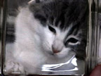

Wound Clips stainless steel, easily correct skin splits without sewing.


E-mail us for prices
and special order information!
Wound Clips stainless steel, easily correct skin splits without sewing.
Seal'Em Up Kit including cyanoacrylate superglue, accelerant, and syringe for careful application at depths up to 2 inches.

Gauze Sealer Kit camo-gauze and large vial of superglue, to conceal minor mistakes and skin/fur degeneration.
Nitrile Rubber Gauze Kit especially suitable for recreating muscle fascia and bladder tissue.
IV Kit small size intravenous kit complete with drip tube, valve, and cannula.

Epoxy Putty handy for sealing up vent holes and smoothing orifices.
NEW!
Osmo-Guard alternative to Super Glue and waste tube, we hope to obtain samples soon pending USDA approval.
Alessi shoehorn and scooper, useful tools during insertion and removal.

Lighted Speculum makes internal manipulations or repairs much easier.

Electronic Dosimeter just fill the internal well with the injectable solution, insert the extra-long needle, reaches tail to head.
Metering Pump ventilates and removes waste through proprietary triple lumen vent tube.

Electronic Quadruped Traction Device motorized clamping device with high torque motors to apply twisting and folding action to all limbs simultaneously. Used for pre-stressing and marrow displacement. Rather expensive but most advanced constrictions are more successful after a few days of application. Be sure to use sufficient medication to avoid shock and fracture.
NEW!
Articulated Feline Tensioner versatile traction device with eight separate points of articulation to perform pre-tensioning for almost any elongated cat shape. Double joint rods allow torsion in either direction. Can be fitted with centrifugal attachment to assist in the shaping of lobed kittens.